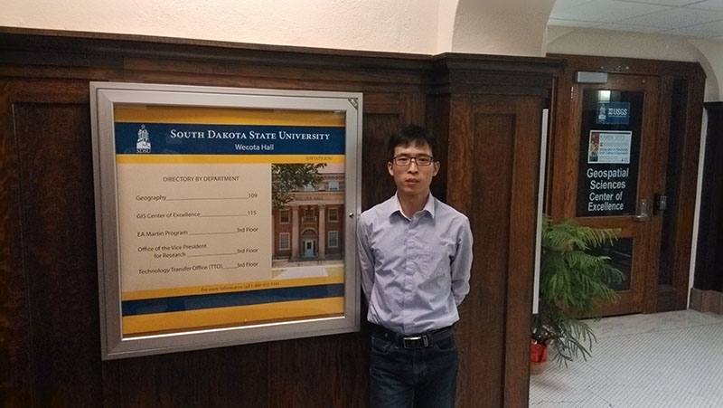
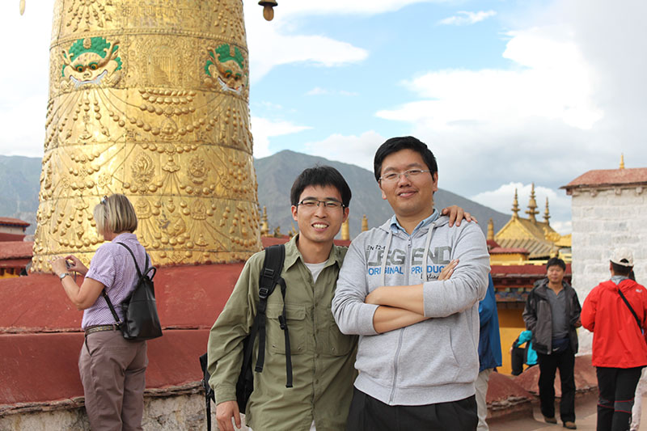
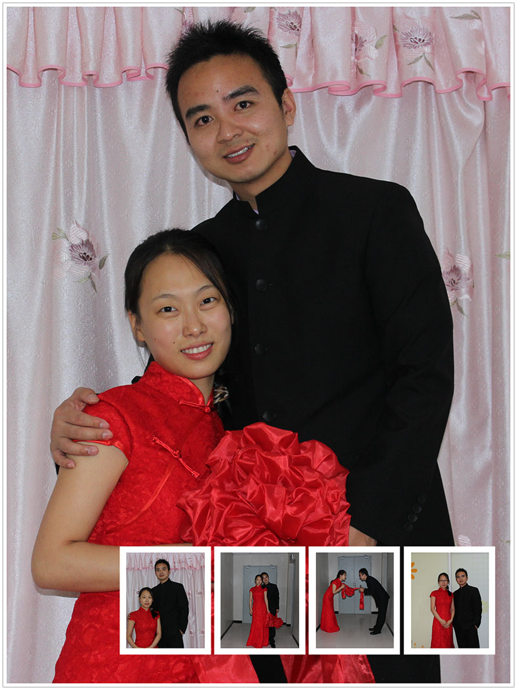
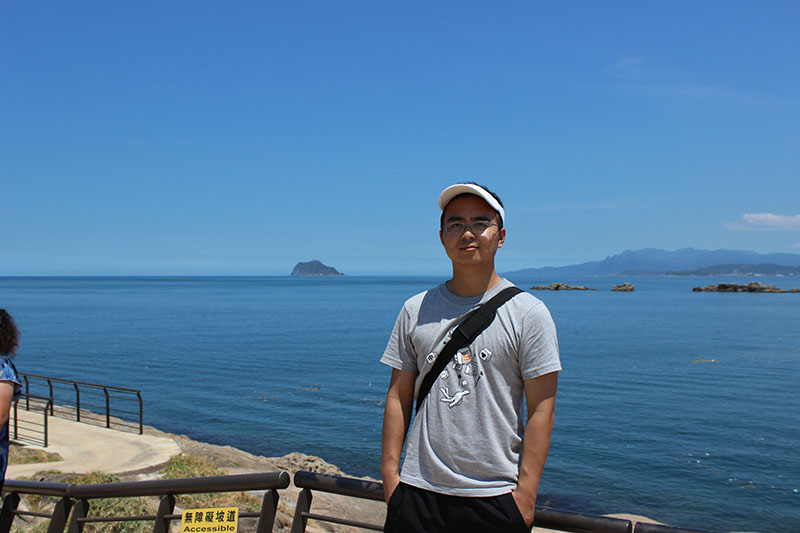
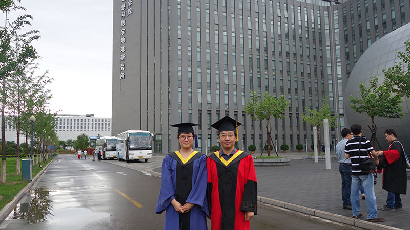

那些年-那些人-那些花-那些草
我们的FALCON处理系统在NEPAL地震中高质量的处理了GF1的数据，形成了无云的地图产品、变化检测产品，效果甚佳令人满意。我们流程基本上使用自动化的方式，很少的人工工作量。
这项工作是多位青年才俊数年来孜孜不倦的工作，不断累积、不断加成的结果。
又到了一年一度送走毕业生的时候了，让我们缅怀他们的勤勉工作，激励后来者将伟大的事业推向更高峰。
李芳军
目前在美国攻读博士学位，前景看好，过几年就能回来当百人当教授啦。并且在2015年成为一位幸福的父亲，一位美国公民的父亲。


桂正科
目前正妇唱夫随地回到离家很近的成都，在阿里巴巴小微贷款公司工作，领着北京的薪水过着悠闲自在的生活。


刘璐
刚毕业一年，目前在离单位不远的软件园ORACLE公司里，乐此不疲的当着“恐龙医生”，为UNIX系统看病找茬。
